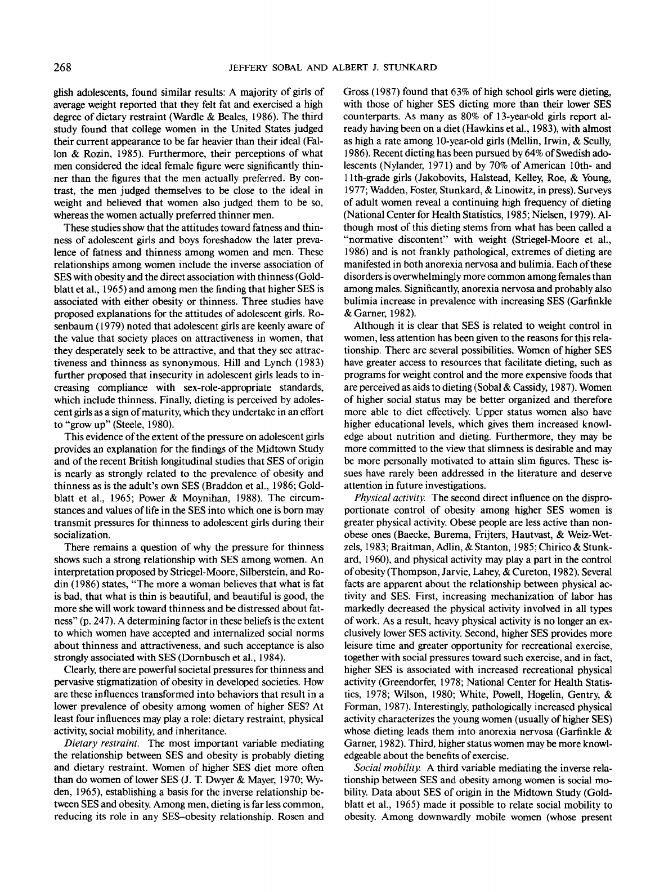

268
JEFFERY
SOBAL
AND
ALBERT
J.
STUNKARD
glish
adolescents,
found
similar results:
A
majority
of
girls
of
average weight reported that they
felt
fat and
exercised
a
high
degree
of
dietary restraint (Wardle
&
Beales, 1986).
The
third
study
found
that college women
in the
United
States
judged
their current appearance
to be far
heavier than their ideal
(Fal-
lon
&
Rozin, 1985). Furthermore, their perceptions
of
what
men
considered
the
ideal
female
figure
were
significantly
thin-
ner
than
the figures
that
the men
actually preferred.
By
con-
trast,
the men
judged themselves
to be
close
to the
ideal
in
weight
and
believed that women also judged them
to be so,
whereas
the
women actually preferred thinner men.
These studies show that
the
attitudes toward fatness
and
thin-
ness
of
adolescent girls
and
boys foreshadow
the
later preva-
lence
of
fatness
and
thinness among women
and
men. These
relationships among women include
the
inverse association
of
SES
with obesity
and the
direct association with thinness
(Gold-
blatt
et
al.,
1965)
and
among
men the finding
that higher
SES is
associated
with either obesity
or
thinness. Three studies have
proposed explanations
for the
attitudes
of
adolescent girls.
Ro-
senbaum
(1979)
noted that adolescent girls
are
keenly aware
of
the
value that society places
on
attractiveness
in
women, that
they desperately seek
to be
attractive,
and
that they
see
attrac-
tiveness
and
thinness
as
synonymous. Hill
and
Lynch (1983)
further
proposed that insecurity
in
adolescent girls leads
to in-
creasing compliance with sex-role-appropriate standards,
which
include thinness. Finally, dieting
is
perceived
by
adoles-
cent girls
as a
sign
of
maturity,
which they undertake
in an
effort
to
"grow
up"
(Steele, 1980).
This evidence
of the
extent
of the
pressure
on
adolescent girls
provides
an
explanation
for the findings of the
Midtown Study
and
of the
recent British longitudinal studies that
SES of
origin
is
nearly
as
strongly related
to the
prevalence
of
obesity
and
thinness
as is the
adult's
own SES
(Braddon
et
al.,
1986;
Gold-
blatt
et
al.,
1965; Power
&
Moynihan, 1988).
The
circum-
stances
and
values
of
life
in the SES
into which
one is
born
may
transmit pressures
for
thinness
to
adolescent girls during their
socialization.
There remains
a
question
of why the
pressure
for
thinness
shows
such
a
strong relationship with
SES
among women.
An
interpretation
proposed
by
Striegel-Moore,
Silberstein,
and Ro-
din
(1986)
states, "The more
a
woman believes that what
is fat
is
bad, that what
is
thin
is
beautiful,
and
beautiful
is
good,
the
more
she
will
work toward thinness
and be
distressed about fat-
ness"
(p.
247).
A
determining factor
in
these
beliefs
is the
extent
to
which women have
accepted
and
internalized social norms
about thinness
and
attractiveness,
and
such
acceptance
is
also
strongly associated with
SES
(Dornbusch
et
al.,
1984).
Clearly,
there
are
powerful
societal pressures
for
thinness
and
pervasive stigmatization
of
obesity
in
developed societies.
How
are
these influences transformed into behaviors that result
in a
lower
prevalence
of
obesity among women
of
higher SES?
At
least
four
influences
may
play
a
role: dietary restraint, physical
activity,
social mobility,
and
inheritance.
Dietary
restraint.
The
most
important
variable mediating
the
relationship between
SES and
obesity
is
probably dieting
and
dietary
restraint.
Women
of
higher
SES
diet more
often
than
do
women
of
lower
SES (J. T.
Dwyer
&
Mayer,
1970;
Wy-
den,
1965),
establishing
a
basis
for the
inverse relationship
be-
tween
SES and
obesity. Among men, dieting
is far
less common,
reducing
its
role
in any
SES-obesity
relationship. Rosen
and
Gross
(1987)
found
that
63% of
high school girls were dieting,
with
those
of
higher
SES
dieting more than their lower
SES
counterparts.
As
many
as 80% of
13-year-old girls
report
al-
ready having been
on a
diet (Hawkins
et
al.,
1983),
with almost
as
high
a
rate among
10-year-old
girls (Mellin,
Irwin,
&
Scully,
1986).
Recent dieting
has
been pursued
by 64% of
Swedish ado-
lescents (Nylander,
1971)
and by 70% of
American 10th-
and
llth-grade
girls (Jakobovits,
Halstead,
Kelley, Roe,
&
\bung,
1977;
Wadden, Foster, Stunkard,
&
Linowitz,
in
press). Surveys
of
adult women reveal
a
continuing high
frequency
of
dieting
(National Center
for
Health Statistics, 1985; Nielsen, 1979).
Al-
though most
of
this dieting stems
from
what
has
been called
a
"normative
discontent"
with weight (Striegel-Moore
et
al.,
1986)
and is not
frankly
pathological, extremes
of
dieting
are
manifested
in
both anorexia nervosa
and
bulimia. Each
of
these
disorders
is
overwhelmingly more common among
females
than
among males.
Significantly,
anorexia nervosa
and
probably also
bulimia
increase
in
prevalence with increasing
SES
(Garfinkle
&
Garner, 1982).
Although
it is
clear that
SES is
related
to
weight control
in
women, less attention
has
been given
to the
reasons
for
this rela-
tionship. There
are
several possibilities. Women
of
higher
SES
have
greater access
to
resources that facilitate dieting, such
as
programs
for
weight control
and the
more expensive
foods
that
are
perceived
as
aids
to
dieting
(Sobal
&
Cassidy,
1987).
Women
of
higher social status
may be
better organized
and
therefore
more able
to
diet
effectively.
Upper status women also have
higher
educational levels, which gives them increased
knowl-
edge about nutrition
and
dieting. Furthermore, they
may be
more committed
to the
view
that slimness
is
desirable
and may
be
more personally motivated
to
attain slim
figures.
These
is-
sues have rarely been addressed
in the
literature
and
deserve
attention
in
future
investigations.
Physical
activity.
The
second direct
influence
on the
dispro-
portionate control
of
obesity among higher
SES
women
is
greater physical activity. Obese people
are
less active than non-
obese ones (Baecke, Burema, Frijters,
Hautvast,
&
Weiz-Wet-
zels,
1983;
Braitman,
Adlin,
&
Stanton,
1985;
Chirico
&
Stunk-
ard,
1960),
and
physical activity
may
play
a
part
in the
control
of
obesity (Thompson, Jarvie, Lahey,
&
Cureton,
1982).
Several
facts
are
apparent about
the
relationship between physical
ac-
tivity
and
SES. First, increasing mechanization
of
labor
has
markedly decreased
the
physical activity involved
in all
types
of
work.
As a
result, heavy physical activity
is no
longer
an ex-
clusively
lower
SES
activity. Second, higher
SES
provides more
leisure time
and
greater opportunity
for
recreational exercise,
together with social pressures toward such exercise,
and in
fact,
higher
SES is
associated with increased recreational physical
activity
(Greendorfer, 1978; National Center
for
Health Statis-
tics, 1978; Wilson, 1980; White, Powell, Hogelin, Gentry,
&
Forman,
1987).
Interestingly, pathologically increased physical
activity
characterizes
the
young women (usually
of
higher SES)
whose
dieting leads them into anorexia nervosa (Garfinkle
&
Garner,
1982).
Third, higher status women
may be
more knowl-
edgeable about
the
benefits
of
exercise.
Social
mobility.
A
third variable mediating
the
inverse rela-
tionship between
SES and
obesity among women
is
social
mo-
bility.
Data
about
SES of
origin
in the
Midtown Study
(Gold-
blatt
et
al.,
1965)
made
it
possible
to
relate social mobility
to
obesity. Among downwardly mobile women (whose present